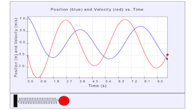

This illustration simulates a mass on a spring system that can be subject to a damping or driving force. Students can adjust the damping or driving parameters to their liking to study their effects. In addition, there are three different models of under damping, over damping, and critical damping.